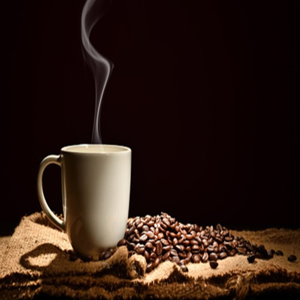
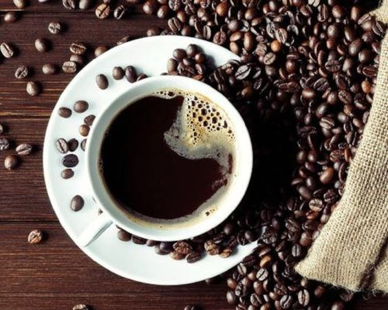

Featured Products
House Blend Coffee

Home roasting is the process of roasting coffee from green coffee beans on a small scale for personal consumption. Home roasting of coffee has been practiced for centuries, using simple methods such as roasting in cast iron skillets over a wood fire and hand-turning small steel drums on a kitchen stovetop. Until the early 20th century, it was more common to roast coffee at home than to buy pre-roasted coffee. Following World War I, commercial coffee roasting became prevalent and, combined with the distribution of instant coffee, home roasting decreased substantially. In recent years, there has been a revival in home roasting. What was originally a necessity has now become a hobby. The attractions are four-fold: enjoying fresh, flavorful coffee; experimenting with various beans and roasting methods; perfecting the roasting process, and saving money. Other factors that have contributed to the renewed interest in home roasting coffee include coffee suppliers selling green coffee in small quantities and manufacturers making counter-top roasters
French Roast
French is the name applied to a degree of roast of coffee beans resulting in a dark brown coffee bean. In this roast, the beans are well into the second crack. French roasted beans will have a dark brown color and a shiney surface from its oils. Coffee brewed from French roasted beans will have the natural characteristic flavors of the bean muted, particularly any acidic notes. Bittersweet tones from the roast will dominate the flavor. French roast coffees are prevalent in coffee associated with the American West. This roast profile is also commonly used in American espresso.
Columbian Roast
Cafe de Columbia" and "Cafe de colombia" redirect here. For the cycling team in the 1980s, see Café de Colombia. For the current cycling team formerly sponsored by Café de Colombia, see Team Manzana Postobón. Coffee production in Colombia is located in ColombiaCoffee production in Colombia Location of Coffee Cultural Landscape World Heritage Site in Colombia Coffee production in Colombia has a reputation for producing mild, well-balanced coffee beans. Colombia's average annual coffee production of 11.5 million bags is the third total highest in the world, after Brazil and Vietnam, though highest in terms of the arabica bean.The beans are exported to United States, Germany, France, Japan, and Italy. Most coffee is grown in the Colombian coffee growing axis region, while other regions focus on quality instead of volumes, such as Sierra Nevada de Santa Marta. In 2007, the European Union granted Colombian coffee a protected designation of origin status. In 2011, UNESCO declared the "Coffee Cultural Landscape" of Colombia, a World Heritage site.
Back To Top